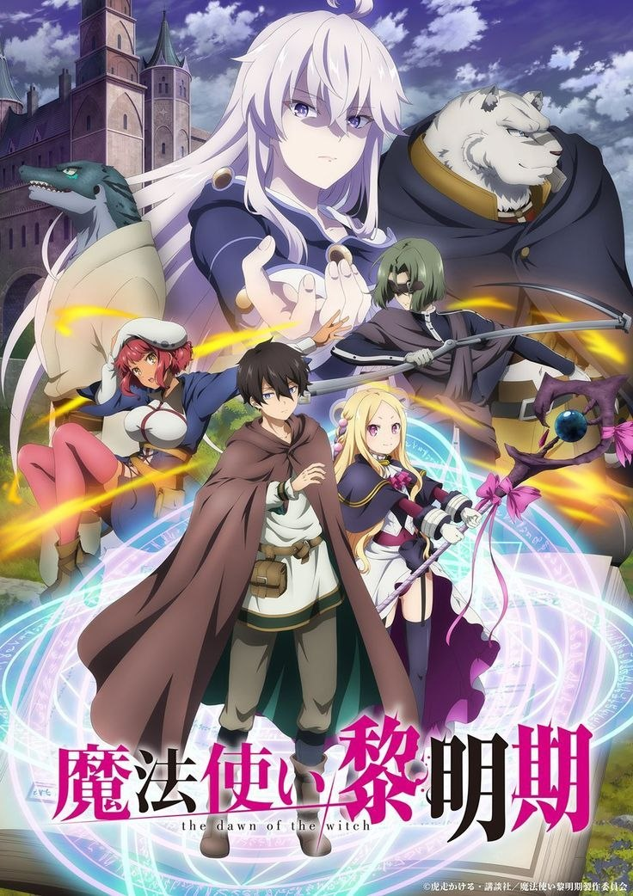

«Grimoire of Zero» залишила в мене дуже тепле, але трохи дивне відчуття після прочитання. З одного боку — це ніби проста історія про подорож і магію, але з іншого — вона чіпляє саме взаємодією персонажів. Найбільше мені сподобалося, як поступово розвиваються стосунки між Зеро і найманцем: спочатку це виглядає як вимушений союз, але з часом між ними з’являється довіра і навіть щось більше.
Світ у манзі теж заслуговує уваги. Він не виглядає казково-ідеальним — навпаки, тут є страх перед магією, упередження і жорстокість до тих, хто відрізняється. Це додає історії більш серйозного настрою і робить її цікавішою, ніж просто чергове фентезі про пригоди. Особливо сподобалося, як показано тему відьом і те, як люди до них ставляться — це створює напругу протягом всієї історії.
Загалом, «Grimoire of Zero» — це не тільки про магію, а й про прийняття, довіру і пошук свого місця у світі. Вона не перевантажена складним сюжетом, але саме за рахунок атмосфери і персонажів добре запам’ятовується. Після прочитання залишається відчуття легкої меланхолії і бажання ще трохи побути в цьому світі.
